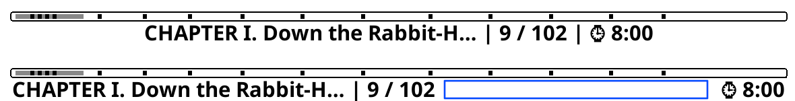
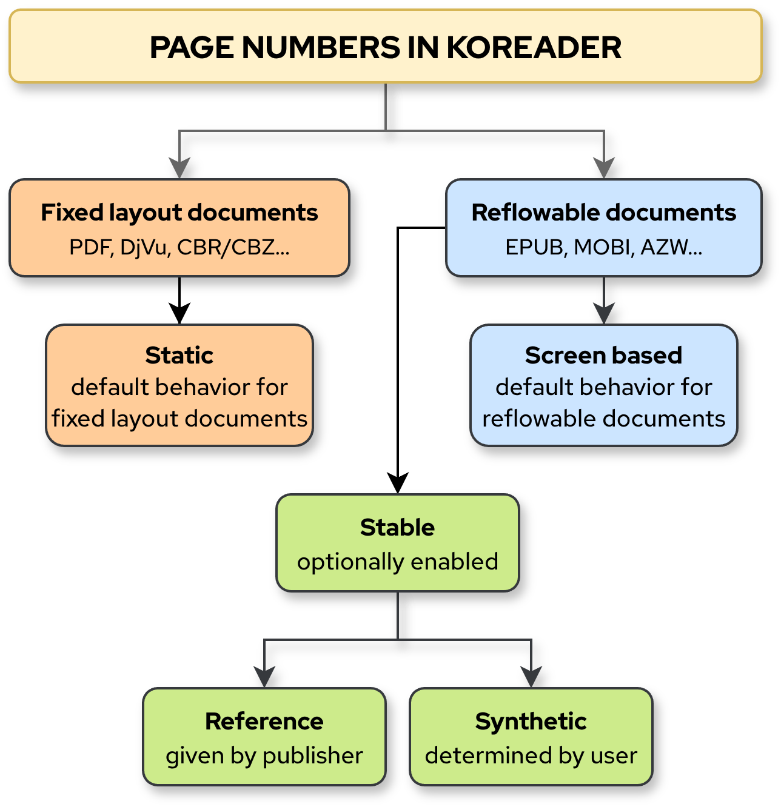
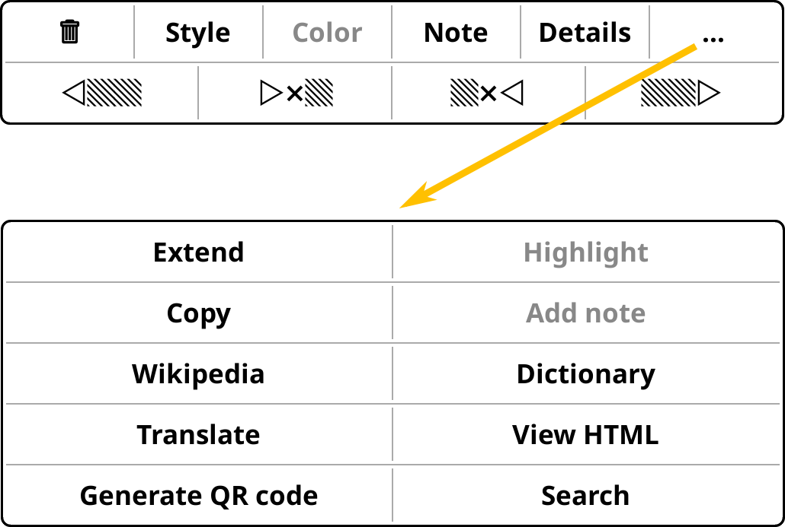
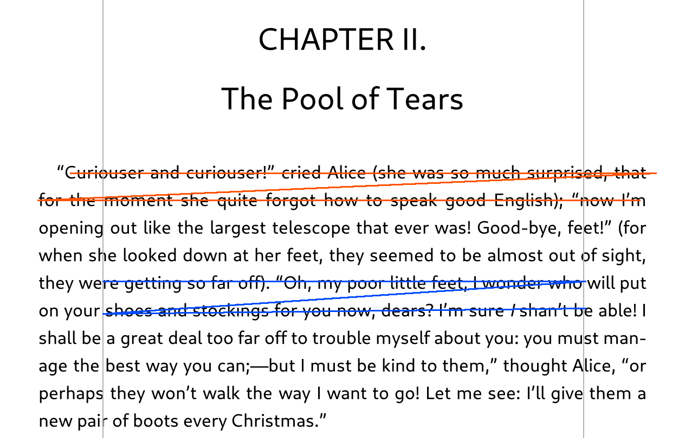
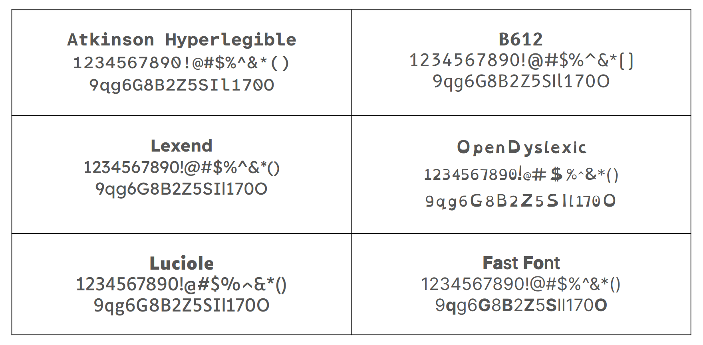
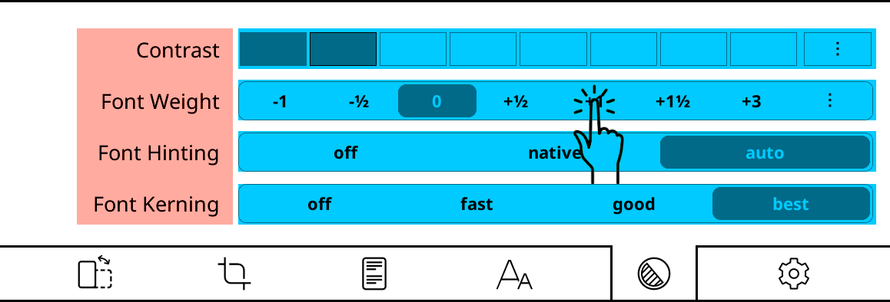
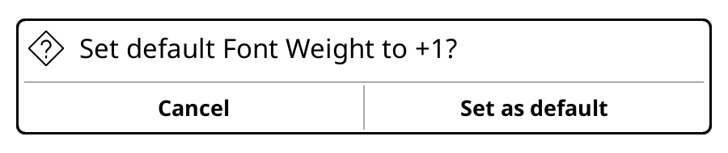

Also ignore these emojis ✅ and asterisks (***) in the text. They are temporary markers and will be removed.
You can click on your name to directly go to your section:
KOReader Tips
0 / 0Loading tips...
✅ To "Saving highlights into PDF"
KOReader can import highlights from PDF files which are marked with other PDF applications. We can't give a list of compatible applications, but import feature generally works with popular PDF readers.
To import the highlights:
- Open your PDF file with KOReader
- Open the Bookmarks dialog from here:
TOP MENU /
 / Bookmarks
/ Bookmarks - Press the button at the top-left corner.
- On the opened dialog, choose Import embedded annotations. Your highlights will be added to the Bookmarks list.
After the import process, highlights in the PDF will turn into regular KOReader highlights. Which means, you can:
- Add notes to them
- Change their style and color
- Delete them (See the note below)
- Export them in various formats
How deletion works: When you import highlights, KOReader doesn't modify the original highlights in your PDF. It adds imported highlights as a layer on top of the originals. So if you delete an imported highlight, only this added layer is deleted. Your original highlights are not deleted from the PDF file. You can open this PDF with another reader and still see the original highlights.
 / Highlights / Write highlights into PDF
/ Highlights / Write highlights into PDF✅ To "Status bar"
KOReader's status bar has a special item called dynamic filler. When you add this invisible item to your status bar, it will expand to fill the available space like an inflated balloon, pushing other items on both sides as you can see in the image below (dynamic filler is visualized as a blue rectangle):

You can enable and move this item like the other status bar items from the same menu. You can also combine this item with the custom text item explained below to adjust your layout further.
You can use this item in combination with the dynamic filler item explained above to adjust your layout further.
✅ To "Status bar"
KOReader allows you to have more than one status bar layout and switch between them. Using this feature, you can have different layouts for cases like these examples:
- A layout showing more items when using wider landscape orientation
- A layout with the chapter name item when reading specific books
- A layout with memory usage item when reading large comics to keep an eye on your memory
To create a preset, first adjust your status bar to your liking by adding and ordering items (as explained before in this section). Then select:
This will create a preset with your current status bar layout. Repeat this for other layouts that you want to create. After this, you can switch between your new layouts from the same menu. You can also use gestures, profiles and quick menu to quickly switch between status bar presets.
✅ To "Status bar"
You can change the font of status bar items from here:
You can use all your installed fonts for the status bar. If you want to fit lots of information, we can suggest DINish Condensed font, which you can download from its project page and install using the same procedure which you can find here***: Using your own fonts
✅ To "Status bar"
External content is a special status bar item that allows KOReader plugins to show content in the status bar. For example Read Timer plugin uses this item to show the timer in the status bar. Currently you don't need to enable it manually but you can find it here:
✅ To "Status bar"
✅ TO Profiles
In addition to adding actions to your quick menu, you can also add your profiles as a menu item. This way, you can execute many actions at once with this single menu item.
We assume that you have a working quick menu and a profile, which you want to add to this menu. With these ready, follow these instructions:
- Go to the Settings of the profile that you want to use as the "menu item" and enable Show in action list. This will make your profile visible in the Gesture manager.
- Now you can add this profile to your quick menu as a regular action from the Gesture Manager. You can find this profile at the last page of General sub-menu of Gesture manager.
After adding your profile as a menu item, you can open your quick menu and tap on this item to execute all the actions in tes profile. You can also add a profile as a sub-menu which allows you to have a nested menu. This method is explained in the next heading.
✅ To Profiles
Normally when you execute a profile, all of the actions in the profile are executed following the order that you have chosen in the Arrange actions menu.
But you also have the option to execute them one by one. Which means, each time you invoke this profile, only one of the actions (next one) will be executed instead of all of them.
Here is a useful example:
- Create a profile with these actions
- Go to pinned page
- Go back to previous location
- Assign it to an easy gesture like Tap bottom right corner
- Enable Execute one by one option from the profile's Edit actions menu
Now each time you tap the right corner, you will switch between your pinned page and your reading position. This can be useful for quickly jumping to references section and going back, for example.
✅ TO Quick Menu
You can also add a quick menu as a menu item to another quick menu. This will give you a nested menu structure. This is useful when you have many quick menus but you don't want to assign different gestures to each one.
- Go to the Settings of the profile that you want to use as the "child menu" and enable Show in action list. This will make your profile visible in the Gesture manager.
- Then enter the Edit actions menu in the same Settings of the child menu profile. Now enable the Show as QuickMenu option which is on the second page. This will tell KOReader to treat this profile as another menu which you can enter, instead of executing all its actions when you tap on it.
- Now you can add this profile to your parent quick menu like other actions in the Gesture manager. You can find your child menu profile under the General tab, last page.
✅ REPLACE "Profile auto-execution" table
You can run a profile manually as explained above but real power of profiles can be unleashed with its auto-execute feature. Using this feature, you can trigger a profile depending on some conditions and sub-conditions:
| Trigger | Sub-conditions |
| On KOReader start Run this profile every time KOReader starts. Note that this is only possible when KOReader is starting with the File browser or Last file. | - |
| On wake-up Run this profile every time device wakes up | - |
| On exiting sleep screen Run this profile every time device exits the sleep screen | - |
| On read timer expiry Run this profile every time the read timer finishes | - |
| On rotation Run this profile when screen rotates to the selected rotation(s). Examples: Change to double column layout when device rotates to landscape. Activate night mode when device rotates upside down. |
|
| On showing folder Run this profile when you enter this folder in file browser. You can use this trigger to change the display mode of file browser. For example when you enter a certain folder you can change the display mode from mosaic to detailed view. |
|
| On book opening
This trigger is executed when you open a book (optionally) combined with specific sub-conditions. First 4 sub-conditions are OR matching, so any one of them is enough to trigger the profile execution. |
|
| On book closing
This option is same as above but it triggers when you close a book. You can use this for example enabling/disabling reading statistics when you open certain documents to exclude them from your stats. |
|
| Only within time interval
This option is not a trigger but a limiter. You can use this option to define a time interval for the execution of profile. For example "make the font bigger when I open a book from a certain collection but only if it is evening time". |
- |
✅
Profiles are auto-executed with a tiny delay to avoid interference with other operations/events of KOReader. But in some cases like closing a document, profile has to be executed instantly to be able to perform its actions.
You can enable this instant execution option from:
When you enable this option, for example on a profile with the trigger on book closing, your profile will be executed before the document is closed. This running order is necessary for proper execution in this case.
Whenever you enable Auto-execute for a profile, we suggest enabling this Execute promptly option too. If you observe that your profile is not working correctly, then you can try disabling this option.
✅ TO PLUGINS/USER PATCHES
✅ To "HTTP inspector" and "TIPS"
This is an Android application that allows you to control your KOReader from an Android OS device on the same network. It uses the KOReader HTTP Inspector plugin to communicate with KOReader. You can remotely perform many actions like turning pages, entering text, adjusting screen light, activating profiles.
You can see the instructions and download the app from its project page: KOReader Page Turner Companion
✅
To see what you can control remotely using the HTTP Inspector plugin:
- Start HTTP Inspector server on your device:
- Open this page http://your-ereader-IP:8080/koreader/event on a device that is connected to the same network as your e-reader
Your list will populate depending on the installed plugins and user patches.
✅ NEW SECTION
Page numbers in KOReader status bar behave differently depending on the document type; some are fixed, while others adjust dynamically. In the image below, you can see an overview of the page numbering system of KOReader. You can come back to this chart while reading this section.
As you can see, documents that KOReader is able to open, can be divided into two categories which we will explain below:

PDF, DjVu and CBR/CBZ are examples of this type of documents. Also known as non-reflowable, these documents has a static layout. This means, every element on the page (text and image) is precisely positioned and their position never changes, whether you are reading it on a small screen or big. The design that you see, is always an exact replica of a printed page.
Fixed-layout documents have only static page numbers. When you open these type of documents in KOReader, page numbers that you see in the status bar, belong to the document itself. Static page numbers don't change with the type or screen size of the reader device.
EPUB, MOBI, AZW, HTML are examples of this type of documents. The layout of these documents is not fixed. This means, the text and other content can adapt (reflow) to fit the size of the screen or window that you are viewing the document in.
You can imagine these type of documents as very long text files or web pages, which naturally don't have page breaks. When you open these documents, KOReader calculates the page numbers on the first opening by dividing this long document into screen sized pages. As a result of this, if you open a document on a 10-inch reader, your book will have less pages than a 6-inch reader because more words can fit on a single page of bigger screen (more words per page = less pages in total).
This also means that if you change the appearance of the text, for example by making the font bigger, this will change your page numbers. Because with a bigger font size, less text will fit on the screen, increasing the total number of pages.
Due to their changing nature, reflowable document page numbers are not very useful for referencing. When you open a PDF file (which is a fixed-layout document) on your e-reader and on your computer at the same time, page 42 will always show the same content on both devices. But for an EPUB file, page 42 on one device will be different from the other.
So now you might ask: "Is it possible to have non-changing page numbers on a reflowable document like EPUB?" Yes it is possible with the stable page numbers feature. There are two types of stable page numbers in KOReader:
1. Publisher page numbers:***also change "reference" name in other parts
KOReader supports documents with publisher page numbers feature, which allows publishers to embed page numbers from printed books directly to the e-book version. When you enable this feature, KOReader doesn't calculate the page numbers itself. Instead, it shows you the embedded page numbers from the publisher. This means, the page number you see in your status bar matches the print version of the book.
You can enable this feature from:
/ Settings / Stable page numbers / Use stable page numbersIf you also check the Show stable page numbers in margin option from the same menu, these publisher page numbers will be shown next to the text in a small font.
2. Characters per page:
What if your book doesn't have publisher page numbers (majority of them don't) but you still need stable page numbers?
Well, you can enable the characters per page feature of KOReader. When you use this feature, KOReader calculates the page numbers according to a defined number of characters per page (instead of your screen size). So, for example you can set KOReader to "count 1500 characters as a single page" (default value of this setting which roughly equals to 250 words in English language).
~250 words is the single page of a standard mass market paperback/PA5 format book. So when you enable this feature, your page count will be similar to a real book printed at the mentioned size. Of course you can change this characters per page setting from the menu to simulate different book sizes.
If you have the printed version of a book, you can adjust the characters per page number to match the total page numbers to the printed book so it would be easier to find a passage in the other version.
When you enable stable page numbers for a document, these changes happen:
- Your status bar switches to stable page numbers for the read/remaining/total page counts.
- File browser shows stable page numbers for this document for the total page count.
- Bookmarks, Table of Contents and Page browser shows stable page numbers.
- If you export your highlights from this document, export file will have the stable page numbers for the highlight and note locations.
✅ Merge with "Using your own fonts" heading
If you are having problems with the font weights, this section can help you to understand how KOReader's font processing works.
- When starting up, KOReader compiles the available fonts by reading their embedded font metadata/info and classifies them according to family and weights. KOReader tries to determine the font family information from the metadata included in the font, so font names are not important when copying to your device.
- If you have more than one font file for a font family, KOReader will try to fit fonts in one of these 4 categories: Regular, Bold, Italic & BoldItalic. An ideal case looks like this:
- Luciole-Regular.ttf mapped to Font weight: 0 (Regular 400)
- Luciole-Bold.ttf mapped to Font weight: +3 (Bold 700)
- Luciole-Regular-Italic.ttf
- Luciole-Bold-Italic.ttf
- If your font provides only one file and it is not Bold, KOReader will assign it as (Regular 400) Font weight: 0 and synthesize all other weights and variants itself. In other words KOReader will fake italic and bold for this font. (If your single font file is a Bold font, then KOReader will sythesize the Regular weight from this.)
If you long-press on the Font weight label in the bottom menu, it will tell you which weight classes your current font provides.
If your font also has other variants, things can get confusing. Let's say you copied a font family to your device. And upon startup, KOReader has read these variants of the font: Light, Thin, Normal, Medium, ExtraBlack, SemiBold, Bold, Black in this order. You would expect to see Normal variant to be used as the document's normal font (because it is named as Normal) but KOReader will use the Light variant because that is the first font in the list that doesn't have the bold flag. And it will ignore the Thin, Normal and Medium variants because it has already found a "not bold" font for the document.
And again according to this list, ExtraBlack will be used as the bold font because it is the first font in the list with the bold flag. And KOReader will ignore the SemiBold, Bold, Black variants, because KOReader has already found the "bold" it is looking for.
As a summary of the above: We copied the whole family and expected Normal and Bold variants to be chosen but instead, KOReader used Light and ExtraBlack variants. This happened because the order of the fonts that are fed to KOReader is not under our control so "first come is first served".
Solution is, transferring only the font files that you want to be used, like this:
- Keep only one of Thin, Extra Light, Light, Normal, Medium: It will be used as the regular font (If your Regular font is too thin, just replace it with Medium weight if you have it).
- Keep only one of Semi Bold, Bold, Extra Bold, Black, Extra Black: It will be used as the bold font.
- You can also add italic variants of the same weight (i.e. medium/medium-italic).
✅ Merge with "Using your own fonts" heading
You can add your own fonts to KOReader and use them as the document font, status bar font and even as the user interface font (with a user patch).
KOReader supports these common font formats:
- TrueType - .ttf extension
- OpenType - .otf extension
- Web Open Font Format - .woff and .woff2 extension
Font files with these extensions can be directly copied to the /koreader/fonts/ folder on your device. Depending on your device, this copying procedure might differ. For example:
- On Kobo devices complete path is /mnt/onboard/.adds/koreader/fonts
- On PocketBook devices, make a directory for each font in /applications/koreader/fonts/ directory and copy your font there.
- On Android OS based devices, you can copy your fonts to these directories:
- Internal storage/Fonts - General font directory for all Android apps
- Internal storage/koreader/fonts - KOReader specific font directory.
- On Desktop version, you can copy your fonts to the location that you can see from the menu item shown below: Open fonts folder. Also if you turn on the Enable system fonts option from the same menu, KOReader can access all the fonts that are available to your operating system:
TOP MENU / / Font / Font settings / Open fonts folder
KOReader supports sub-directories for the Fonts directory, so you can copy font families as directories under this. After copying your fonts to the mentioned directories, restart KOReader. New fonts should appear at the beginning of the font list:
/ Font✅ TO "MOVING THROUGH YOUR BOOK"
After learning how to navigate, we will now learn how to mark pages in a document. This will allow us to quickly jump between different parts of our document.
If there is a page in a document that you frequently jump to (for example Reference pages section of a book), you can pin this page to easily jump there. You can have only one pinned page per book, so if you need more places to jump, check the Bookmarks feature below.
How to pin/unpin a page:
- Open the Skim widget.
- Press the page number in the Skim widget.
- A dialog will open and you will see the Pin current page button there. Press normally to pin the page or long-press to remove the pin.
You can reach this dialog from this menu too, which you can also assign a gesture to reach:
TOP MENU / / Go to page
How to jump to your pinned page:
- Open the Skim widget.
- Press the page number in the Skim widget.
- Press the Go to pinned page button in the opening dialog.
How to go back:
After jumping to the pinned page, you can return to your previous reading position with this menu action:
/ Go back to previous locationAlso you can use the swipe left then right single finger swipe to go back.
Pinning/jumping is much faster if you assign gestures to these actions:
- For example you can assign a gesture to the Pin current page action.
- Another gesture to the Go to pinned page action.
- And some other gesture to the Back to previous location
Now you can quickly pin a page, jump to it when reading and go back with just three taps. You can also add these actions to your quick menu of course.
You can add (and remove) a bookmark by tapping the top right corner of a page. This is the equivalent of folding the corner of the page on a printed book and shows a similar icon at the corner when you add a bookmark.
You can access your bookmarks from the Bookmarks window and then tap on the bookmarks to jump to the relevant page:
/ BookmarksYou can open this window quickly by swipe left with double finger gesture or up then left single finger swipe.
✅ TO LIBRARY MANAGEMENT
An OPDS (Open Publication Distribution System) catalog is an online feed that acts like a digital library index. KOReader has OPDS support so you can browse these digital libraries, search for books on them and download the books directly to your device.
KOReader comes pre-configured with some large OPDS catalogs like Project Gutenberg and Standard Ebooks and you can add other OPDS catalogs. To open the OPDS dialog, go to:
 / OPDS catalog
/ OPDS catalogUsing personal OPDS servers
In addition to the public catalogs, you can use OPDS system to manage your own library. Using the Calibre application, you can serve the books on your computer as an OPDS catalog, which you can browse directly from KOReader. Click here for Calibre instructions about configuring an OPDS server.
If you are using the Kavita self-hosted server for library management, you can access its OPDS documentation for KOReader here.
After setting up your own OPDS servers, you need to add them to KOReader. Instructions are here.
✅ TO LIBRARY MANAGEMENT
Kavita is an open-source and feature rich, cross platform reading server. You can setup your own server and share your reading collection with your friends and family. It also has OPDS and progress sync support for KOReader. Using this application, you can access your library from your reader device and synchronize reading positions between different devices to continue reading where you have left. Project's page is here.
Documentation for OPDS and progress sync for KOReader users is here.
✅ New section
If you are using KOReader on several devices like e-reader, phone, tablet or desktop computer, KOReader can synchronize your reading progress between them. Using the progress sync feature, you can continue reading seamlessly when switching from your e-reader at home to your phone on the commute for example.
This feature is handled by the progress sync plugin. Setting up synchronization involves these three steps which we will explain below:
- Create a sync account
- Login to your sync account from all the devices you want to synchronize
- Automatically or manually synchronize your reading progress
To create a sync account, connect to a network on your device and open the progress sync plugin in KOReader:
and press the Register/Login button.
In the opening window, enter a username and password then press the Register button. This will create an account on KOReader sync server which will hold your reading progress.
Open the same menu on the devices that you want to sync. Enter your username and password and this time press the Login button. After this, your devices will be connected to your sync account.
You can give recognizable names to your devices. Again from the same menu, press the Device hostname and enter a name for the current device.
After everything is set up, you can synchronize your reading progress automatically or manually:
- Automatic sync: To synchronize automatically, enable the Automatically keep documents in sync menu item. Now whenever you close a book or suspend/resume your device, KOReader will send your reading progress to the server (of course this requires an available network connection).
- Manual sync: If you don't have constant internet connection on your device for battery or availability reasons, you can choose to synchronize manually. You have many options to trigger a synchronization:
- From the menu: In the Progress sync plugin's menu you can press the Push progress from this device now menu item to send your progress on the current device to the server. To receive the latest progress from the server, press Pull progress from other devices now menu item.
- With gestures: These actions (push/pull progress) are available in the Gesture manager so you can assign them to any gesture you like.
- With quick menu: You can add these actions to your Quick Menu.
- From profiles: You can add these actions to your Profiles. Especially with the auto-execute feature of profiles, you can trigger sync with various filters and conditions.
In order to sync the progress of a document on two different devices, KOReader first has to identify these two files as "same". Sometimes this can be tricky, so we have two methods that you can choose from, depending on your usage of KOReader. You can change the method from the Document matching method option in the progress sync menu.
Binary matching (default)
By default, progress sync uses Binary matching method to identify the files. In this method, KOReader generates a partial MD5 hash of the file’s content (which looks like this: 0b229176d4e8db7f...). Any tiny change to the file, completely changes this hash so binary matching method works only if both files are perfectly identical.
If you are copying the exact same file manually to all your devices, this method should work. But for example if you are using Calibre to send books to your devices, binary matching will fail.
Because Calibre writes its own information like viewer progress directly into the file, which changes the file hash calculation, so KOReader will treat these files (original and Calibre modified) as two different books. If you have this problem you can use the alternative method explained below.
Filename matching
This is a "looser" matching method designed for users whose files might vary slightly between devices due to the changes made to the documents by other software like Calibre, as explained above.
In this method, KOReader only checks if the filenames (including the extension) of the two documents are identical to match them. So if you are using Calibre or some other library management software to manage your library across different devices, you can change to Filename matching.
- KOReader sync server, the software that handles KOReader's synchronization process is an open-source project. You can find more information including the source code on its GitHub page.
- Synchronization server does not store file name or content. This means, the server can't know what you are reading. When you synchronize the progress of a document, only this information is transferred and kept on the server:
- User name (that you have chosen)
- Unique id of the document (MD5 hash of the file which looks like this: 0b229176...)
- Furthest reading position for this document
- Your password is not stored on the server (only a MD5 hash is kept).
- All communication between KOReader and the sync server is secured with HTTPS.
You also have the option to host your own sync server if you wish. You can use the official KOReader sync server or one of the alternatives you can see on this page.
There are also other projects like Calibre-Web which are library management solutions with an integrated KOReader sync server.
***change other references in the guide to this- Email to KOReader plugin: This plugin is similar to the Send to Kindle feature. After configuring the plugin, you can send EPUB files to your Gmail address as attachments and the plugin will download them to your device. Detailed instructions are in the linked GitHub page of the plugin.
- KOAssistant plugin: A very powerful and customizable AI plugin. You can translate/explain text, compare books/articles etc. by creating custom actions with additional contexts and instructions. Supports local models running on your computer via Ollama compatibility. Very detailed instructions are in the linked GitHub page of the plugin.
- Menu disabler plugin: With this plugin, you can make the KOReader interface less cluttered by hiding the menu items that you don't use.
KOReader has a very efficient text processing engine. It can open a 1000 page book in 2 seconds on a 2021 era e-book reader. Also books are cached on first opening so KOReader can open them faster next time.
Real problem with large text files is the delay when modifying the text appearance. For example, online Chinese novels are known to reach tens of millions of words and generally saved as text files. If you try to change the font size of a .txt book this big, you might see a big delay after each adjustment because all of the book has to be rendered again. KOReader has a partial rendering system which aims to shorten this delay considerably. But this feature can't be used with the text files because these files are not divided into chapters (you can read more about partial rendering here).
To benefit from partial rendering speed-up, you can convert your large text file to EPUB format using the Calibre application. Calibre will automatically divide your text file into smaller individual files during conversion and pack them into an EPUB file. After the conversion, you can change your book appearance much faster. You can download Calibre from this page and find tutorials for the TXT-to-EPUB conversion procedure online.
On Android OS devices, KOReader keeps its settings under the Internal Storage/koreader/ directory. This is an intentional behavior which is different from other Android applications. This location allows you to backup and synchronize your KOReader settings easily by saving them under this user-accessible directory.
But when you uninstall KOReader or clear its data from the Android OS Settings menu, this KOReader settings directory is not removed. So if you uninstall KOReader and then install it again, it will start with your old settings.
If you want to completely reset KOReader to its factory defaults, you should delete this directory manually. When you start KOReader after deleting this directory, it will be automatically re-created with the default settings.
Technically yes, but practically no. KOReader avoids changing the default screensaver behavior on these readers because this might trigger a negative reaction from Amazon, which might lock down the Kindle ecosystem (no more KOReader for Kindles) or even endanger the whole project (no more KOReader). For further info, you can check this discussion with our developers here. Our stance is in line with the MobileRead forums' stance which you can read here.
✅ To TIPS
You can create a sleep screen wallpaper from any document or image using the screenshot feature of KOReader. There are two gestures depending on where you are:
- The default screenshot gesture long-diagonal swipe if you are in reader mode and file browser
- The alternative screenshot gesture two-finger large diagonal tap on corners if you are in the image viewer
In image viewer, you can zoom and pan the image before taking the screenshot, so it will be cropped to exact size and aspect ratio of your device without stretching.
✅ To UI tips
- When viewing dictionary and wikipedia results, you can long-press on word(s) in these windows to search them further in the dictionary/wikipedia. This will open another window with the result, so you won't lose your previous search.
- If you have opened several search windows as described in the previous tip, you can close them all at once by long-pressing the close X button.
✅ To File Browser
Normally, KOReader file browser doesn't show these two groups of files and directories:
- Hidden files and directories: These are files and directories that start with a dot "." character, like .screensavers. If you want to see these directories and files, enable this option:
(FILE BROWSER) TOP MENU /
 / Settings / Show hidden files
/ Settings / Show hidden files - Unsupported file types: These are the file types that KOReader can't open directly, like font files with a .ttf extension. KOReader can directly open these file types: PDF, EPUB, DJVU, MOBI, CBR, CBZ, CBT, DOCX, RTF, HTML, HTMLZ, TXT, XPS, FB2, PDB, CHM and MD document types, image files and ZIP/RAR archives, so only these files are visible in the file browser. If you want to see the unsupported file types too, you can enable this option:
/ Settings / Show unsupported files✅ TO "Highlighting"
After highlighting a part of your document, you can tap on the highlight to see the highlight menu. From this highlight menu, you can reach another extended menu by tapping on the ... (three dots) button as shown below:

Using this extended menu you can:
- Extend your highlight to include more text
- Copy the text to clipboard to paste elsewhere
- Search the text on Wikipedia
- Look up the text in an installed dictionary
- Translate the text using the Google Translate service
- View HTML source of the highlighted section, which is useful when writing a style tweak
- Generate QR code which includes the highlighted text, to scan from another device with a camera and a QR-code reader application
- Search for the text in the book
✅ TO "Highlighting"
✅ To Gestures
You can see an overview of currently defined gestures here:
✅ TO "Bottom Menu Items"
Font hinting is a typographical technique that adjusts the characters in a font to fit in a low-resolution grid, like an e-ink screen. When enabled, the result is sharper and easier to read characters, at the cost of slight distortion of the original font design.
Difference of font hinting is more visible on standard-resolution screens or at smaller font sizes. On a very high-resolution screen, the difference is much less noticeable because the pixels are small enough.
Here is a more detailed comparison:
Hinting OFF
|
Hinting ON
|
|
|
In KOReader, font hinting is enabled by default and uses the FreeType library's hinting algorithm instead of font's internal instructions (to be safe because font internal instructions might be broken). But you can try the font designer's instructions embedded in the font file to see if it looks better:
- Off Hinting is disabled
- Native KOReader uses the font's internal hinting instructions
- Auto (on by default) KOReader uses FreeType's hinting algorithm, ignoring font's internal hinting
✅ New section
In this section we will first explain two KOreader plugins that might improve your reading speed. Then we will list some fonts that can improve your reading speed and comprehension.
When you enable, this plugin adds two vertical lines to the reading area, near the left and right edges as you can see in the image below. These lines serve as the start/end markers for your eyes, when reading a line from your book. Working principle of this plugin is based on the fact that, you don't really need to look at the first and last words of a line directly, because with some practice you can perceive them with your peripheral vision.

- Vertical gray lines: Perception expander indicators
- Red line: Your eyes following the text normally
- Blue line: Your eyes jumping between the indicators (shorter distance)
To use this plugin, you have to first enable it by going to:
After enabling the plugin, you will have a new menu item here:
/ Speed reading module - perception expanderYou can toggle the expander lines from this menu and also configure the indicators according to your liking and peripheral vision skill level. You can watch the Tim Ferriss video that inspired this plugin here.
This plugin is a RSVP (Rapid Serial Visual Presentation) reader. This technique is based on flashing the word(s) at the center of the screen quickly. Your eyes don't need to move when reading like this so the reading speed can be faster. And if you improve the skill, you can perceive more than one word at once, which further increases the reading speed.
To use this plugin, you have to first enable it by going to:
After enabling the plugin, you will have a new menu item here:
You can start the plugin from this menu and also configure the settings like:
- RSVP speed - Flashing speed in WPM (words per minute)
- Preview words - How many words to show at once
You can start using the plugin in single word and low WPM (slower) mode and increase them as you get better.
In this section we will suggest some fonts that might improve your reading experience. These fonts are not an exclusive feature of KOReader, but we are including them here because sometimes our users ask about them in our issues and discussions.
You can install these fonts like any other font. We explain the procedure here*** if you don't know how to add fonts to your device.
Overview of fonts in this section (note that all the fonts in this image have same size - 11 pt - but very different widths, line heights and readability):

Atkinson Hyperlegible
Designed by Braille Institute, this font family aims to improve legibility and readability for individuals with low vision. It has clear, highly distinctive letters and numbers. You can see the font and download it from here
B612
B612 is a highly legible font family, designed to be used on Airbus aircraft cockpit screens. Its legible design makes it particularly suitable for degraded contexts and aims reducing visual fatigue and cognitive load. These design principles makes it a suitable font for e-readers too. You can see the font and download it from Google Fonts
Lexend
This font's design is based on the principles derived from educational studies that aim to improve reading performance of students. You can read about the font here and download it from Google Fonts
Luciole
This font adheres to a dozen specific design criteria to provide the best possible reading experience for the visually impaired. It emphasizes the "inner" space of letters and has extremely clear, distinct numbers and mathematical symbols. You can see the font and download it from here
Open Dyslexic
This font is designed to increase readability for readers with dyslexia. Letters have heavy weighted bottoms to emphasize direction. The unique shapes of each letter can prevent confusion through flipping and swapping. You can download it from here
Shantell Sans
This font is designed by a dyslexic author as a legible, accessible, and easy to read typeface. It also works nicely for small text thanks to its wider letters and relaxed spacing. You can download it from Google Fonts
Fast Font
This is a special font that substitutes the first few letters of a word with their bold variant (number of letters is calculated according to the word length). This bold letters then act as artificial fixation points for the eye to jump on as you can see in this sentence. In theory this might increase the reading speed but of course personal results may vary. Interestingly, readers with ADHD generally report benefits.
This font depends on special OpenType features which are supported by KOReader. So you can just download the font, copy it to your device and use it like any other font. You can see the examples and download this font and its variations (serif, monospace and dotted) from its GitHub repo
✅ To font suggestions
KOReader engine can’t create fake small capital letters if a font lacks them and renders this type of text in lowercase. WP Fonts project aims to modify fonts to add small capital letters for using in KOReader. You can see the detailed instructions and download the fonts from the project page: WP Fonts
✅ NEW SECTION
After learning the basics of KOReader from the previous section, now you want to start reading, right? Before that, lets customize the appearance of your book to make it look even nicer.
In this section, we will do a step-by-step "digital typesetting" to make your e-book look more like a printed book. Aim of this tutorial is to get you familiar with the KOReader's text appearance settings so you can change them according to your taste later.
Here are the steps:
- Get a nice font: First we need a font for our book which looks more like a printed book (and at the same time readable on an e-ink screen). If you have a favorite font, you can use that. Otherwise you can download one of our suggestions below. We have two fonts for different looks: serif and sans-serif (if you don't know what these mean, just click on the links to see the difference):
- If you like serif fonts, download Lusitana. This is an elegant classical serif typeface that is designed for reading long texts. You can download it from here.
- If you like sans-serif fonts, download Red Hat Text. This is a geometric sans typeface that prioritizes legibility. You can download it from here.
- Transfer the font to your device: If you don't know how, check this part of the guide and come back here after copying the font to your device:***. You should restart KOReader after transferring the font so it can add the font to the font list.
- Set your new font: Open your book and go to the menu you see below. Your newly added font should appear at the beginning of the font list. Select it:
- Disable Embedded Fonts: Now we have to disable this option by setting it to off so KOReader will use our selected font instead of the one included in the book. If the setting is grayed out so you can't change the setting, this means that there are no fonts embedded in this book so you can skip to the next step:
- Adjust Font size: Now we will adjust our font size. For Lusitana 22.0 is a nice size. For Red Hat Text you can go down to 20.0. However, this is a personal preference, so you can set it to whatever looks best to you. Set the font size here:
- Adjust Font weight: If you are using KOReader on an e-ink device, your text will look less black compared to the LCD/OLED screens. Generally fonts are not designed specifically for e-ink screens so we will fix this by making it darker with the Font weight setting. +1 is a good starting point. Some thin fonts might require +2. You can set it more precisely by tapping the three dots at the end of the setting line:
- Adjust Line spacing: Now we will adjust the Line spacing which determines the space between lines vertically. This setting varies between fonts depending on the character geometries. For Lusitana you can set it to 135 %. Red Hat Text with its more open characters, can afford a tighter 120 %. Set it here:
- Adjust Margins:
At this point our text should look pretty nice. Now we will adjust the margins (empty white space around our text) as the last touch and finish our adjustments. Now open this menu and adjust the settings as you see below:
- L/R Margins: Set to level 7
- Top Margin: Set to level 6
- Bottom Margin: Set to level 6
/ FontAfter all these settings, your book should look more like a printed book. You can make further adjustments to any of these settings as you wish now.
So after all these settings, you might ask "Will my other books look like this too?" No, not automatically. Because all these changes are valid only for the current book. When you open another book, it will look like how we started, before all these changes.
This is an intentional behavior of KOReader and it works like this:
- KOReader settings like font size, line spacing etc. have default values.
- If you open a new book, KOReader refers to these default values to set the appearance of your book.
- When you make changes in a book, like adjusting the text size, they affect only this specific book. Because your changes won't modify the default values, so newly opened books won't be affected.
- But you have the ability to save your changes as defaults and when you do this, they will be used for the newly opened books too.
Let's see on an example:
During this exercise, we increased the Font weight to +1.00. Now open the Font weight menu and press the three dots at the end of the Font weight setting line. A dialog window will open and you will see this: Default value: +0.00. This means that when you open another book, its font weight will still be 0 (Default value), instead of +1 as we have set before.
So to make a setting permanent, you have to set it as default. There are two methods in KOReader for setting these default values:
- Setting individual settings as defaults
- Setting "all of the settings" as defaults at once
Settings in KOReader generally can be set as default with a long-press. Have a look at the screenshot below:

Values on the right side marked in blue can be long-pressed to set them as defaults. Let's say you want to make the text bolder. If you press on +1 normally, it will change only for this book. But if you long-press on it, you will see this dialog:

If you press the Set as default button, this book and the books that you will open in the future will have +1 font weight.
This "long-press to set as default" rule works in menus too. For example when changing the font from the top menu:
- short press = change the font only for this book
- long-press = change the font for this book and all the future books
Remember that, the books that you have already opened will keep their own settings. Changing defaults don't affect them.
As the title says, you have the ability to set all of the current book settings as defaults. This is useful if you make many changes as we did in this chapter and you like the result so you want all your books to look like this.
You can save the current document settings as defaults by choosing:
/ Document settings / Save document settings as defaultThis will overwrite all the settings with the current document's settings. So all the books that you will open after pressing this menu item will look exactly like your current book.
But what we can do about already opened books? Well, assuming that you have pressed the menu item above and have set your new defaults, you can easily apply them to any book now. Just open the book that you want to change, go to the same menu and press this item:
/ Document settings / Reset document settings to defaultThis basically tells KOReader to overwrite current book's settings with the defaults (that you saved before).
*** remove these from CUSTOMIZING TEXT APPEARANCE
Ok, at this point you already know:
- How to change the individual settings of the current book
- How to set settings as defaults so all books will have them
Now we assume that you modified your defaults so whenever you open a new book, it will look exactly as you like it. Now you started reading a fantasy fiction series. And you decided to immerse yourself in the books so you installed a nice medieval looking font for this series (here is a nice one if you really need something like this). But since this is a very different font, you had to also change many settings like line spacing, font weight, margins etc.
To change all these settings for these fantasy books, you have two options according to what we have learned:
- You can change these settings for each book when you open them. This is very tedious, not a good solution.
- You can change settings for one book and use the Save document settings as default feature. But this will affect all the newly opened books, which we don't want. We only want to apply the medieval font settings to these few medieval books.
Luckily KOReader has a feature called Profiles that allows us to save a book's settings and apply them to other books (like copy & paste).
Now going back to our scenario, we assume that you have adjusted all the settings for your medieval fantasy book. Now we will go here:
It will ask for a name. You can enter something like "Medieval Fiction" and save. By doing this, we created a profile named Medieval Fiction which includes the settings for the current book. Now you can see it in the Profiles menu. After this, you can open a book and run this profile and all these settings will be applied.
And you can run this profile from:
- Profiles menu mentioned above
- With a Gesture
- From a Quick Menu
- koreader.rocks: Official domain of the project. Other domains including koreader.com are NOT US!
- KOReader GitHub page: This is where KOReader is developed and where you can download the official releases for all operating systems and devices.
- F-Droid release: Android version of KOReader that is provided by us. There is no Play Store version of KOReader!
TO "Troubleshooting"
This is from the recent issue.
KOReader uses battery very efficiently and currently we don't have any complaints about high levels of battery usage. So if your e-reader device's battery started draining abnormally when using KOReader, generally first suspect is the battery degradation.
But if you are sure that your battery is healthy and drain happens only in KOReader, cause might be a problematic firmware update.
Here are the steps if you have this drain problem:
- Find the latest firmware version for your device.
- Check the firmware version of your device from the operating system and if you are not on the latest, update your firmware.
- If updating your firmware doesn't solve the drain problem, factory reset your device and reinstall KOReader (don't forget to backup your library***).
If there are no firmware updates for your device, just apply the third step. These steps might solve the battery problem. If not, you can open an issue on our project page.
✅ Replace list with table
This guide is primarily designed for color screens and a relatively modern browser. Especially if you are using it for the first time, we highly recommend reading this on a computer, tablet or a mobile phone. Seeing user interface elements and menu paths properly will make your life easier while learning how to use KOReader. Of course you can read this on your e-ink device too, but the experience will not be optimal.
You can use the search function of your browser to find a specific topic or keyword (generally Ctrl + F). If you have a suggestion, correction or question related to this user guide, you can write to this GitHub discussion thread.
Text and images in this guide are
created and checked by humans
Parts of KOReader These items always refer to something on the screen that you can set/select/tap as part of the KOReader user interface. |
Status bar Font weight |
Menu paths (green) These are the locations of settings and menu items in the KOReader user interface. |
TOP MENU / / Highlight style |
External apps and services (purple) These are services or applications that can work with KOReader. They are marked because we want to emphasize that these are not a part of KOReader project so they are not under our control. |
Calibre, Readwise, KoHighlights... |
Internal links (teal) These links with a house icon at the end take you to the other parts of this guide. |
Gestures |
External links (blue) These are regular links that go outside the guide. |
Project Gutenberg |
We also have different boxes throughout the guide to inform or warn you:
I am an ADVANCED tag. If you see me on a topic, it means that you need to have a certain degree of technical knowledge like working with a file system, CSS knowledge, installation of external files etc. depending on the procedure.
***Add on-screen buttons here ↑